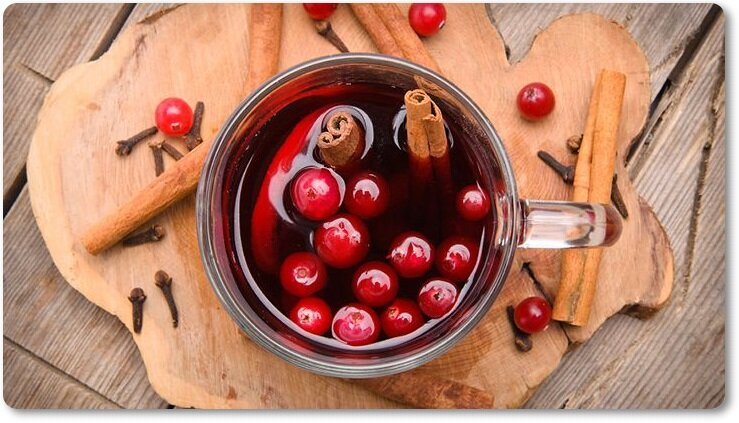
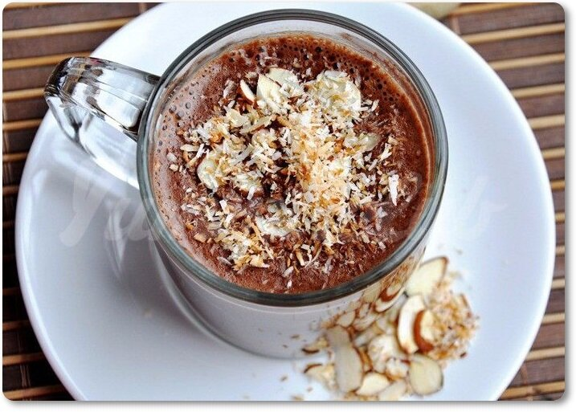

Большущая кружка с чем-нибудь вкусным и горячим зимой - это святое. Вне зависимости от того, что вы предпочитаете: кофе, чай, какао или цикорий, с молоком или без - простые рецепты рано или поздно приедаются. Представляем подборку самых вкусных и оригинальных напитков, с приготовлением которых справится даже школьник.
Кофе со сметаной и кремом
- стакан свежезаваренного черного кофе;
- 4 кусочка сахара;
- 4 столовые ложки сметаны;
- 2 столовые ложки сахарной пудры;
- чайная ложка тертой лимонной цедры;
- 2 столовые ложки толченых орехов;
- ванилин по вкусу.
В подогретые чашечки положить по кусочку сахара и влить горячий кофе. Сметану взбить с сахарной пудрой и ванилином в густую пену. Полученные крем положить в чашечки с горячим кофе. Посыпать крем тертой лимонной цедрой, толчеными орехами и сразу подавать.
Клюквенный сидр
- 4 стакана клюквенного сока/ягод клюквы;
- 4 стакана яблочного сидра;
- 4 ломтика апельсина;
- 2-4 ч.л. коричневого или кокосового сахара;
- 4 палочки корицы;
- 4 цельных гвоздик.
Если вы используете ягоды, предварительно взбейте их в блендере до состояния однородного пюре, процедите через сито и марлю, чтобы выделился сок. Смешайте сок и яблочный сидр, добавьте сахар, палочки корицы, гвоздику и апельсин. Нагревайте на среднем огне до кипения, а затем уменьшите огонь.
Попробуйте сидр на вкус, при необходимости добавьте еще сахар и специи. Процедите и подавайте!
Взбитое молоко с сиропом
- стакан молока;
- несколько капель любого сиропа (лавандового, кофейного, шоколадного, карамельного, фруктового).
Молоко медленно нагревайте в кастрюле, не доводя до кипения. Когда нагреется, уберите с огня. Налейте молоко в какую-нибудь емкость (а лучше в шейкер) и добавьте сироп. Затем взбейте и аккуратно перелейте в стакан, чтобы пена не упала.Молоко можно взбить миксером или перелить его в банку и сильно потрясти. Пена должна быть плотной и состоять из мелких пузырей.
Безалкогольный глинтвейн
- 300 мл вишневого сока;
- 40 мл смородинового сиропа;
- 40 мл меда;
- корица, гвоздика, бадьян – по вкусу;
- по 4 дольки яблока, апельсина, лайма и лимона
В сотейник с фруктами налйте вишневый сок и смородиновый сироп, добавьте специи. Нагрейте. Перелейте в кувшинчик, по желанию украсьте яблоком, бадьяном и палочкой корицы.
Кокосовый горячий шоколад
- 300 мл миндального молока;
- 100 гр. горького шоколада;
- 60 мл. кокосового молока;
- 3 ст. ложки коричневого сахара.
Растопите шоколад в небольшой кастрюле, добавьте кокосовое и миндальное молоко, засыпьте сахар. Перемешайте венчиком до однородного состояния.
Разлейте готовый напиток по стаканам и подавайте горячим.